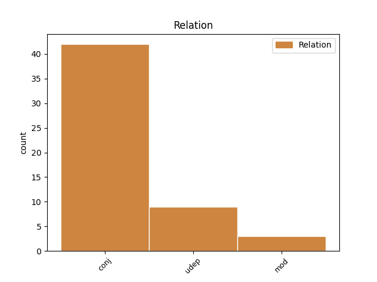
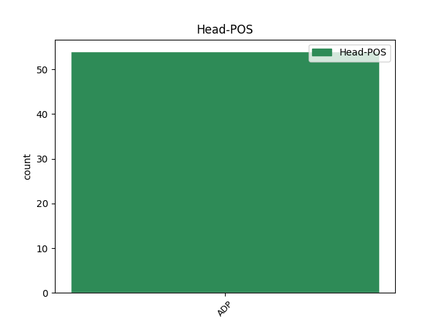
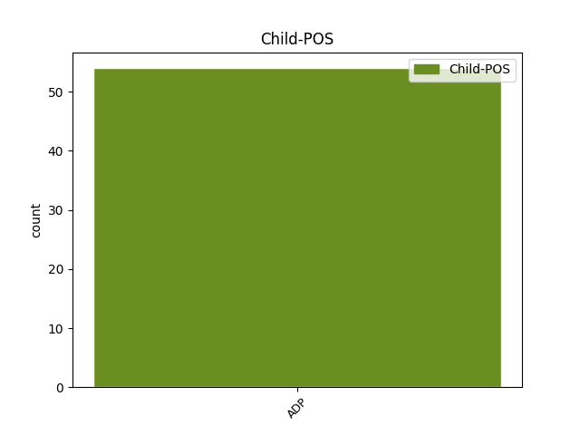

Distribution of features within this leaf



Agreement Rules sorted by frequency.
- When the dependent token is the conjunct(conj) of the head token, and the head token is ADP and the dependent token is ADP.
1 و _ _ _ _ 0 _ _ _
2 طالب _ _ _ _ 0 _ _ _
3 المسؤول _ _ _ _ 0 _ _ _
4 الفلسطينى _ _ _ _ 0 _ _ _
5 مجلس _ _ _ _ 0 _ _ _
6 الامن _ _ _ _ 0 _ _ _
7 الدولى _ _ _ _ 0 _ _ _
8 ب _ _ _ _ 0 _ _ _
9 اتخاذ _ _ _ _ 0 _ _ _
10 اجراءات _ _ _ _ 0 _ _ _
11 كفيلة _ _ _ _ 0 _ _ _
12 ب _ _ _ _ 0 _ _ _
13 وقف _ _ _ _ 0 _ _ _
14 المجازر _ _ _ _ 0 _ _ _
15 الاسرائيلية _ _ _ _ 0 _ _ _
16 التى _ _ _ _ 0 _ _ _
17 تأتى _ _ _ _ 0 _ _ _
18 بعد بَعدَ ADP PI------4- AdpType=Prep|Case=Acc 0 _ _ _
19 ساعات _ _ _ _ 0 _ _ _
20 من _ _ _ _ 0 _ _ _
21 تسليم _ _ _ _ 0 _ _ _
22 خريطة _ _ _ _ 0 _ _ _
23 الطريق _ _ _ _ 0 _ _ _
24 رسميا _ _ _ _ 0 _ _ _
25 و _ _ _ _ 0 _ _ _
26 بعد بَعدَ ADP PI------4- AdpType=Prep|Case=Acc 18 conj _ Gloss=after,afterward,later,yet|LTranslit=baʿda|Root=b_`_d|Translit=baʿda|Vform=بَعدَ
27 يوم _ _ _ _ 0 _ _ _
28 من _ _ _ _ 0 _ _ _
29 حصول _ _ _ _ 0 _ _ _
30 الحكومة _ _ _ _ 0 _ _ _
31 الفلسطينية _ _ _ _ 0 _ _ _
32 على _ _ _ _ 0 _ _ _
33 ثقة _ _ _ _ 0 _ _ _
34 البرلمان _ _ _ _ 0 _ _ _
35 الفلسطينى _ _ _ _ 0 _ _ _
36 . _ _ _ _ 0 _ _ _
1 و _ _ _ _ 0 _ _ _
2 كشف _ _ _ _ 0 _ _ _
3 الوزير _ _ _ _ 0 _ _ _
4 النقاب _ _ _ _ 0 _ _ _
5 عن _ _ _ _ 0 _ _ _
6 أن _ _ _ _ 0 _ _ _
7 ه _ _ _ _ 0 _ _ _
8 س _ _ _ _ 0 _ _ _
9 يتم _ _ _ _ 0 _ _ _
10 بحث _ _ _ _ 0 _ _ _
11 البرامج _ _ _ _ 0 _ _ _
12 ب _ _ _ _ 0 _ _ _
13 التفصيل _ _ _ _ 0 _ _ _
14 خلال خِلَالَ ADP PI------4- AdpType=Prep|Case=Acc 0 _ _ _
15 الاجتماعات _ _ _ _ 0 _ _ _
16 على _ _ _ _ 0 _ _ _
17 مستوى _ _ _ _ 0 _ _ _
18 كبار _ _ _ _ 0 _ _ _
19 المسئولين _ _ _ _ 0 _ _ _
20 و _ _ _ _ 0 _ _ _
21 الوزراء _ _ _ _ 0 _ _ _
22 خلال خِلَالَ ADP PI------4- AdpType=Prep|Case=Acc 14 udep _ Gloss=during,through|LTranslit=ḫilāla|Root=_h_l_l|Translit=ḫilāla|Vform=خِلَالَ
23 الفترة _ _ _ _ 0 _ _ _
24 من _ _ _ _ 0 _ _ _
25 5 _ _ _ _ 0 _ _ _
26 إلى _ _ _ _ 0 _ _ _
27 9 _ _ _ _ 0 _ _ _
28 مايو _ _ _ _ 0 _ _ _
29 الجارى _ _ _ _ 0 _ _ _
30 . _ _ _ _ 0 _ _ _
1 لم _ _ _ _ 0 _ _ _
2 نقرأ _ _ _ _ 0 _ _ _
3 في _ _ _ _ 0 _ _ _
4 ما _ _ _ _ 0 _ _ _
5 ينشر _ _ _ _ 0 _ _ _
6 تصريحاً _ _ _ _ 0 _ _ _
7 واحداً _ _ _ _ 0 _ _ _
8 ل _ _ _ _ 0 _ _ _
9 قادة _ _ _ _ 0 _ _ _
10 الحزب _ _ _ _ 0 _ _ _
11 الحاكم _ _ _ _ 0 _ _ _
12 حول _ _ _ _ 0 _ _ _
13 موقف _ _ _ _ 0 _ _ _
14 هم _ _ _ _ 0 _ _ _
15 من _ _ _ _ 0 _ _ _
16 هذا _ _ _ _ 0 _ _ _
17 البرنامج _ _ _ _ 0 _ _ _
18 الذي _ _ _ _ 0 _ _ _
19 تطالب _ _ _ _ 0 _ _ _
20 ب _ _ _ _ 0 _ _ _
21 ه _ _ _ _ 0 _ _ _
22 المعارضة _ _ _ _ 0 _ _ _
23 منذ _ _ _ _ 0 _ _ _
24 عدة _ _ _ _ 0 _ _ _
25 سنوات _ _ _ _ 0 _ _ _
26 ، _ _ _ _ 0 _ _ _
27 و _ _ _ _ 0 _ _ _
28 يحظى _ _ _ _ 0 _ _ _
29 ب _ _ _ _ 0 _ _ _
30 تأييد _ _ _ _ 0 _ _ _
31 قطاعات _ _ _ _ 0 _ _ _
32 مهمة _ _ _ _ 0 _ _ _
33 و _ _ _ _ 0 _ _ _
34 مؤثرة _ _ _ _ 0 _ _ _
35 في _ _ _ _ 0 _ _ _
36 المجتمع _ _ _ _ 0 _ _ _
37 المصري _ _ _ _ 0 _ _ _
38 ، _ _ _ _ 0 _ _ _
39 بينما _ _ _ _ 0 _ _ _
40 يجري _ _ _ _ 0 _ _ _
41 الحديث _ _ _ _ 0 _ _ _
42 ب _ _ _ _ 0 _ _ _
43 توسع _ _ _ _ 0 _ _ _
44 حول _ _ _ _ 0 _ _ _
45 ما _ _ _ _ 0 _ _ _
46 يرغب _ _ _ _ 0 _ _ _
47 الحزب _ _ _ _ 0 _ _ _
48 الحاكم _ _ _ _ 0 _ _ _
49 تحقيق _ _ _ _ 0 _ _ _
50 ه _ _ _ _ 0 _ _ _
51 من _ _ _ _ 0 _ _ _
52 الحوار _ _ _ _ 0 _ _ _
53 ، _ _ _ _ 0 _ _ _
54 و _ _ _ _ 0 _ _ _
55 في _ _ _ _ 0 _ _ _
56 مقدمة _ _ _ _ 0 _ _ _
57 ذلك _ _ _ _ 0 _ _ _
58 الحديث _ _ _ _ 0 _ _ _
59 المتكرر _ _ _ _ 0 _ _ _
60 حول حَولَ ADP PI------4- AdpType=Prep|Case=Acc 0 _ _ _
61 استبعاد _ _ _ _ 0 _ _ _
62 حركة _ _ _ _ 0 _ _ _
63 " _ _ _ _ 0 _ _ _
64 الإخوان _ _ _ _ 0 _ _ _
65 المسلمين _ _ _ _ 0 _ _ _
66 " _ _ _ _ 0 _ _ _
67 من _ _ _ _ 0 _ _ _
68 الحوار _ _ _ _ 0 _ _ _
69 ب _ _ _ _ 0 _ _ _
70 اعتبار _ _ _ _ 0 _ _ _
71 ها _ _ _ _ 0 _ _ _
72 لا _ _ _ _ 0 _ _ _
73 تتمتع _ _ _ _ 0 _ _ _
74 ب _ _ _ _ 0 _ _ _
75 الشرعية _ _ _ _ 0 _ _ _
76 القانونية _ _ _ _ 0 _ _ _
77 ، _ _ _ _ 0 _ _ _
78 بعد بَعدَ ADP PI------4- AdpType=Prep|Case=Acc 60 mod _ Gloss=after,afterward,later,yet|LTranslit=baʿda|Root=b_`_d|Translit=baʿda|Vform=بَعدَ
79 أن _ _ _ _ 0 _ _ _
80 قطع _ _ _ _ 0 _ _ _
81 " _ _ _ _ 0 _ _ _
82 صفوت _ _ _ _ 0 _ _ _
83 الشريف _ _ _ _ 0 _ _ _
84 " _ _ _ _ 0 _ _ _
85 ب _ _ _ _ 0 _ _ _
86 عدم _ _ _ _ 0 _ _ _
87 وجود _ _ _ _ 0 _ _ _
88 نية _ _ _ _ 0 _ _ _
89 ل _ _ _ _ 0 _ _ _
90 منح _ _ _ _ 0 _ _ _
91 الحركة _ _ _ _ 0 _ _ _
92 حق _ _ _ _ 0 _ _ _
93 تشكيل _ _ _ _ 0 _ _ _
94 حزب _ _ _ _ 0 _ _ _
95 سياسي _ _ _ _ 0 _ _ _
96 ، _ _ _ _ 0 _ _ _
97 فضلا _ _ _ _ 0 _ _ _
98 عن _ _ _ _ 0 _ _ _
99 الإفراط _ _ _ _ 0 _ _ _
100 في _ _ _ _ 0 _ _ _
101 نقد _ _ _ _ 0 _ _ _
102 الخطاب _ _ _ _ 0 _ _ _
103 الأمريكي _ _ _ _ 0 _ _ _
104 ب _ _ _ _ 0 _ _ _
105 شأن _ _ _ _ 0 _ _ _
106 التحول _ _ _ _ 0 _ _ _
107 الديموقراطي _ _ _ _ 0 _ _ _
108 في _ _ _ _ 0 _ _ _
109 مصر _ _ _ _ 0 _ _ _
110 ، _ _ _ _ 0 _ _ _
111 ب _ _ _ _ 0 _ _ _
112 اعتبار _ _ _ _ 0 _ _ _
113 ه _ _ _ _ 0 _ _ _
114 نوعاً _ _ _ _ 0 _ _ _
115 من _ _ _ _ 0 _ _ _
116 الوصاية _ _ _ _ 0 _ _ _
117 ! _ _ _ _ 0 _ _ _
Disagree Examples:
1 و _ _ _ _ 0 _ _ _
2 لعل _ _ _ _ 0 _ _ _
3 شغف _ _ _ _ 0 _ _ _
4 فؤاد _ _ _ _ 0 _ _ _
5 كنعان _ _ _ _ 0 _ _ _
6 اللغوي _ _ _ _ 0 _ _ _
7 و _ _ _ _ 0 _ _ _
8 نزعة _ _ _ _ 0 _ _ _
9 ه _ _ _ _ 0 _ _ _
10 الى _ _ _ _ 0 _ _ _
11 الاناقة _ _ _ _ 0 _ _ _
12 في _ _ _ _ 0 _ _ _
13 التعبير _ _ _ _ 0 _ _ _
14 ، _ _ _ _ 0 _ _ _
15 و _ _ _ _ 0 _ _ _
16 المتانة _ _ _ _ 0 _ _ _
17 في _ _ _ _ 0 _ _ _
18 السبك _ _ _ _ 0 _ _ _
19 ، _ _ _ _ 0 _ _ _
20 جعلا _ _ _ _ 0 _ _ _
21 ه _ _ _ _ 0 _ _ _
22 من _ _ _ _ 0 _ _ _
23 الكتّاب _ _ _ _ 0 _ _ _
24 المقلين _ _ _ _ 0 _ _ _
25 ، _ _ _ _ 0 _ _ _
26 الذين _ _ _ _ 0 _ _ _
27 يرفضون _ _ _ _ 0 _ _ _
28 الاطناب _ _ _ _ 0 _ _ _
29 و _ _ _ _ 0 _ _ _
30 الإفاضة _ _ _ _ 0 _ _ _
31 ، _ _ _ _ 0 _ _ _
32 و _ _ _ _ 0 _ _ _
33 كان _ _ _ _ 0 _ _ _
34 يؤثر _ _ _ _ 0 _ _ _
35 التمهل _ _ _ _ 0 _ _ _
36 في _ _ _ _ 0 _ _ _
37 الكتابة _ _ _ _ 0 _ _ _
38 متخيراً _ _ _ _ 0 _ _ _
39 ألفاظ _ _ _ _ 0 _ _ _
40 ه _ _ _ _ 0 _ _ _
41 ب _ _ _ _ 0 _ _ _
42 دقة _ _ _ _ 0 _ _ _
43 و _ _ _ _ 0 _ _ _
44 جمالية _ _ _ _ 0 _ _ _
45 ، _ _ _ _ 0 _ _ _
46 و _ _ _ _ 0 _ _ _
47 صائغا _ _ _ _ 0 _ _ _
48 جمل _ _ _ _ 0 _ _ _
49 ه _ _ _ _ 0 _ _ _
50 صوغ _ _ _ _ 0 _ _ _
51 الأساتذة _ _ _ _ 0 _ _ _
52 الماهرين _ _ _ _ 0 _ _ _
53 . _ _ _ _ 0 _ _ _
54 مجموعة _ _ _ _ 0 _ _ _
55 ه _ _ _ _ 0 _ _ _
56 القصصية _ _ _ _ 0 _ _ _
57 » _ _ _ _ 0 _ _ _
58 أولاً _ _ _ _ 0 _ _ _
59 و _ _ _ _ 0 _ _ _
60 آخرا _ _ _ _ 0 _ _ _
61 و _ _ _ _ 0 _ _ _
62 بين بَينَ ADP PI------4- AdpType=Prep|Case=Acc 0 _ _ _
63 بين بَينَ ADP PI------2- AdpType=Prep|Case=Gen 62 conj _ Gloss=among,between|LTranslit=bayna|Root=b_y_n|SpaceAfter=No|Translit=bayni|Vform=بَينِ
64 « _ _ _ _ 0 _ _ _
65 كانت _ _ _ _ 0 _ _ _
66 أشبه _ _ _ _ 0 _ _ _
67 ب _ _ _ _ 0 _ _ _
68 الحدث _ _ _ _ 0 _ _ _
69 القصصي _ _ _ _ 0 _ _ _
70 عند _ _ _ _ 0 _ _ _
71 ما _ _ _ _ 0 _ _ _
72 صدرت _ _ _ _ 0 _ _ _
73 في _ _ _ _ 0 _ _ _
74 العام _ _ _ _ 0 _ _ _
75 1974 _ _ _ _ 0 _ _ _
76 . _ _ _ _ 0 _ _ _
77 و _ _ _ _ 0 _ _ _
78 عرفت _ _ _ _ 0 _ _ _
79 تلك _ _ _ _ 0 _ _ _
80 القصص _ _ _ _ 0 _ _ _
81 ب _ _ _ _ 0 _ _ _
82 جرأة _ _ _ _ 0 _ _ _
83 نادرة _ _ _ _ 0 _ _ _
84 راح _ _ _ _ 0 _ _ _
85 الكاتب _ _ _ _ 0 _ _ _
86 يواجه _ _ _ _ 0 _ _ _
87 من _ _ _ _ 0 _ _ _
88 خلال _ _ _ _ 0 _ _ _
89 ها _ _ _ _ 0 _ _ _
90 موضوعات _ _ _ _ 0 _ _ _
91 كانت _ _ _ _ 0 _ _ _
92 شائكة _ _ _ _ 0 _ _ _
93 و _ _ _ _ 0 _ _ _
94 لا _ _ _ _ 0 _ _ _
95 تزال _ _ _ _ 0 _ _ _
96 ك _ _ _ _ 0 _ _ _
97 الجنس _ _ _ _ 0 _ _ _
98 و _ _ _ _ 0 _ _ _
99 الخيانة _ _ _ _ 0 _ _ _
100 . _ _ _ _ 0 _ _ _
1 و _ _ _ _ 0 _ _ _
2 قال _ _ _ _ 0 _ _ _
3 رئيس _ _ _ _ 0 _ _ _
4 الشعبة _ _ _ _ 0 _ _ _
5 العامة _ _ _ _ 0 _ _ _
6 ل _ _ _ _ 0 _ _ _
7 المستوردين _ _ _ _ 0 _ _ _
8 ب _ _ _ _ 0 _ _ _
9 اتحاد _ _ _ _ 0 _ _ _
10 الغرف _ _ _ _ 0 _ _ _
11 التجارية _ _ _ _ 0 _ _ _
12 المصرية _ _ _ _ 0 _ _ _
13 مصطفى _ _ _ _ 0 _ _ _
14 زكي _ _ _ _ 0 _ _ _
15 إن _ _ _ _ 0 _ _ _
16 ارتفاع _ _ _ _ 0 _ _ _
17 سعر _ _ _ _ 0 _ _ _
18 صرف _ _ _ _ 0 _ _ _
19 اليورو _ _ _ _ 0 _ _ _
20 رغم _ _ _ _ 0 _ _ _
21 خفض _ _ _ _ 0 _ _ _
22 الفائدة _ _ _ _ 0 _ _ _
23 علي _ _ _ _ 0 _ _ _
24 ه _ _ _ _ 0 _ _ _
25 يؤثر _ _ _ _ 0 _ _ _
26 سلباً _ _ _ _ 0 _ _ _
27 على _ _ _ _ 0 _ _ _
28 الواردات _ _ _ _ 0 _ _ _
29 المصرية _ _ _ _ 0 _ _ _
30 من _ _ _ _ 0 _ _ _
31 دول _ _ _ _ 0 _ _ _
32 الاتحاد _ _ _ _ 0 _ _ _
33 الأوروبي _ _ _ _ 0 _ _ _
34 التي _ _ _ _ 0 _ _ _
35 ما _ _ _ _ 0 _ _ _
36 زالت _ _ _ _ 0 _ _ _
37 تحتل _ _ _ _ 0 _ _ _
38 المرتبة _ _ _ _ 0 _ _ _
39 الأولى _ _ _ _ 0 _ _ _
40 في _ _ _ _ 0 _ _ _
41 هيكل _ _ _ _ 0 _ _ _
42 الواردات _ _ _ _ 0 _ _ _
43 المصرية _ _ _ _ 0 _ _ _
44 حيث _ _ _ _ 0 _ _ _
45 استحوذت _ _ _ _ 0 _ _ _
46 على _ _ _ _ 0 _ _ _
47 43 _ _ _ _ 0 _ _ _
48 % _ _ _ _ 0 _ _ _
49 من _ _ _ _ 0 _ _ _
50 ه _ _ _ _ 0 _ _ _
51 خلال _ _ _ _ 0 _ _ _
52 الربع _ _ _ _ 0 _ _ _
53 الأول _ _ _ _ 0 _ _ _
54 من _ _ _ _ 0 _ _ _
55 العام _ _ _ _ 0 _ _ _
56 المالي _ _ _ _ 0 _ _ _
57 الحالي _ _ _ _ 0 _ _ _
58 2003 _ _ _ _ 0 _ _ _
59 / _ _ _ _ 0 _ _ _
60 2004 _ _ _ _ 0 _ _ _
61 ب _ _ _ _ 0 _ _ _
62 قيمة _ _ _ _ 0 _ _ _
63 1657.4 _ _ _ _ 0 _ _ _
64 مليون _ _ _ _ 0 _ _ _
65 دولار _ _ _ _ 0 _ _ _
66 مقابل مُقَابِلَ ADP PI------4- AdpType=Prep|Case=Acc 0 _ _ _
67 948.2 _ _ _ _ 0 _ _ _
68 مليون _ _ _ _ 0 _ _ _
69 دولار _ _ _ _ 0 _ _ _
70 ل _ _ _ _ 0 _ _ _
71 أمريكا _ _ _ _ 0 _ _ _
72 و _ _ _ _ 0 _ _ _
73 607.4 _ _ _ _ 0 _ _ _
74 مليون _ _ _ _ 0 _ _ _
75 دولار _ _ _ _ 0 _ _ _
76 ل _ _ _ _ 0 _ _ _
77 الدول _ _ _ _ 0 _ _ _
78 الآسيوية _ _ _ _ 0 _ _ _
79 و _ _ _ _ 0 _ _ _
80 279.8 _ _ _ _ 0 _ _ _
81 مليون _ _ _ _ 0 _ _ _
82 دولار _ _ _ _ 0 _ _ _
83 ل _ _ _ _ 0 _ _ _
84 الدول _ _ _ _ 0 _ _ _
85 العربية _ _ _ _ 0 _ _ _
86 و _ _ _ _ 0 _ _ _
87 نحو نَحوَ ADP PI------2- AdpType=Prep|Case=Gen 66 conj _ Gloss=approximately,towards|LTranslit=naḥwa|Root=n_.h_w|Translit=naḥwi|Vform=نَحوِ
88 190 _ _ _ _ 0 _ _ _
89 مليون _ _ _ _ 0 _ _ _
90 دولار _ _ _ _ 0 _ _ _
91 ل _ _ _ _ 0 _ _ _
92 بريطانيا _ _ _ _ 0 _ _ _
93 . _ _ _ _ 0 _ _ _